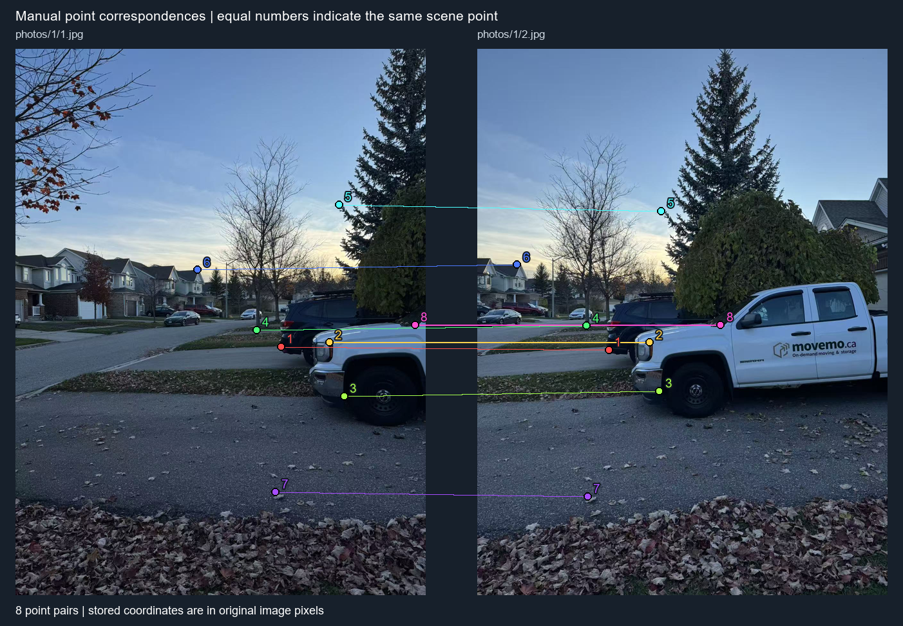
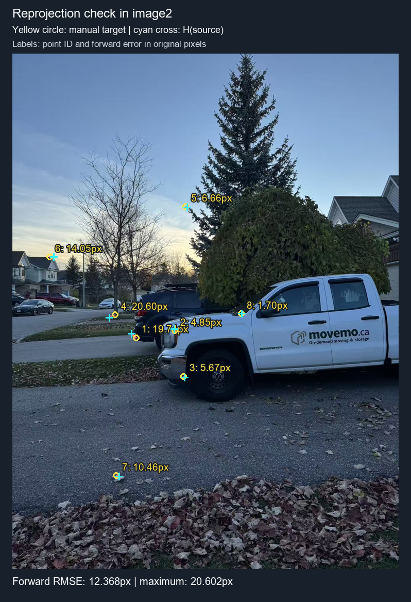
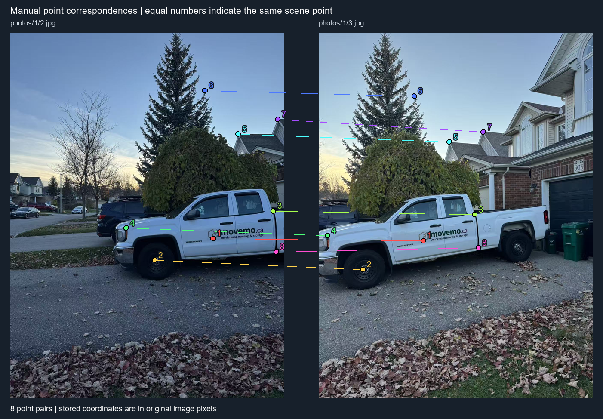
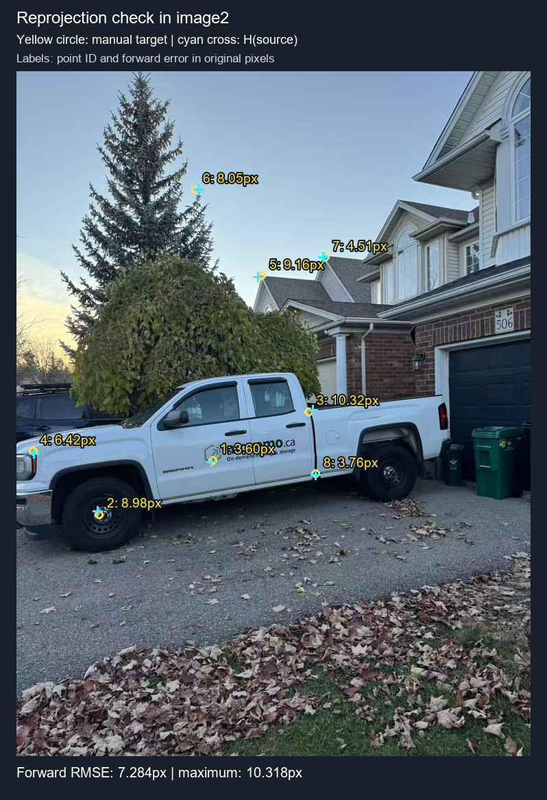
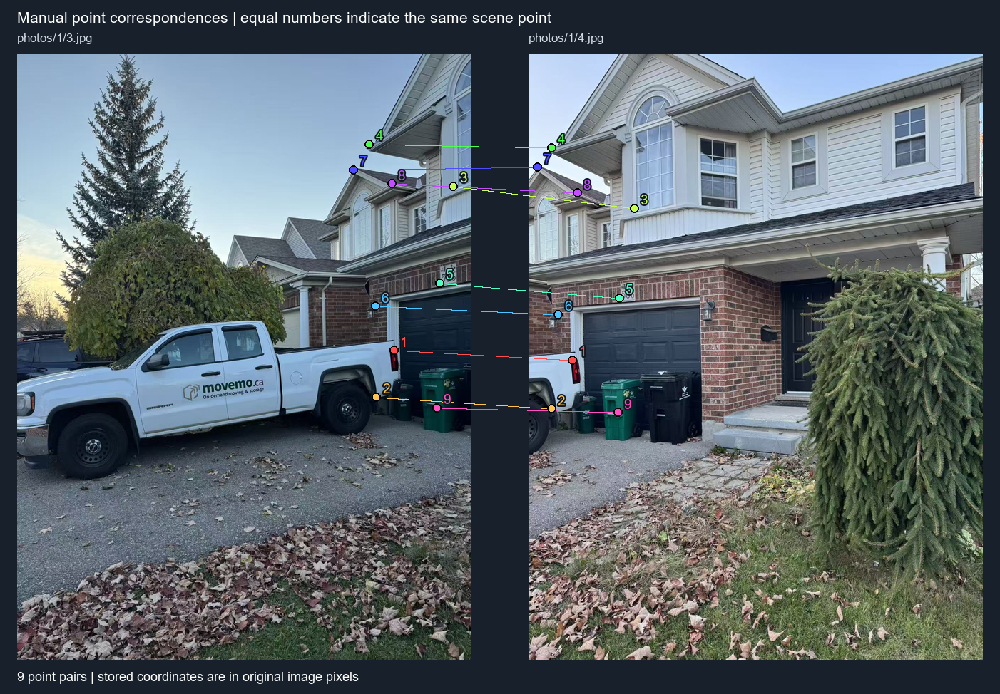
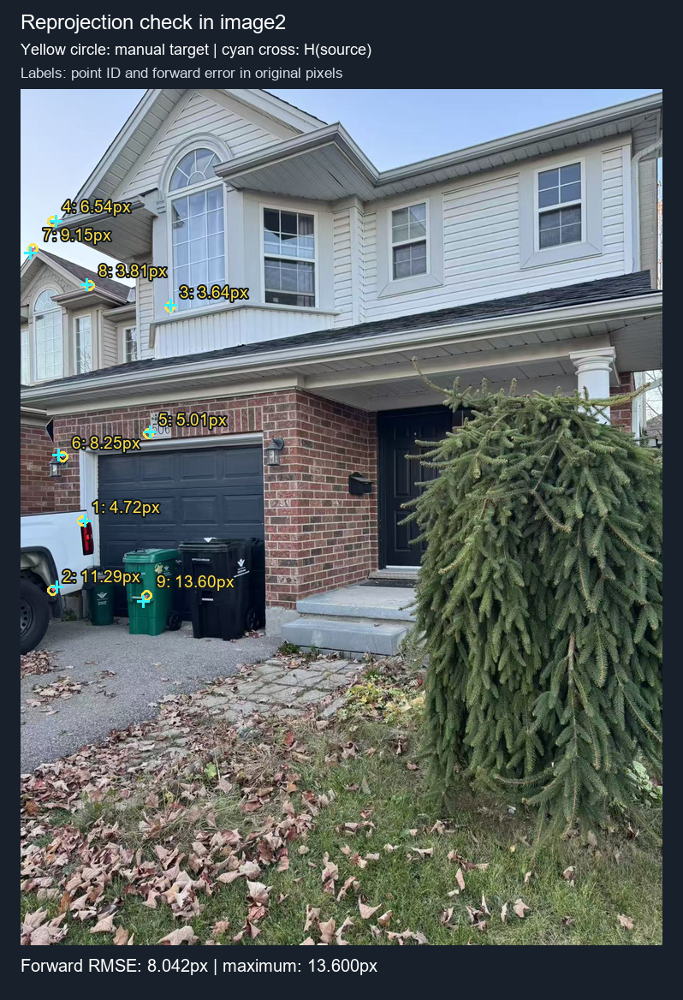
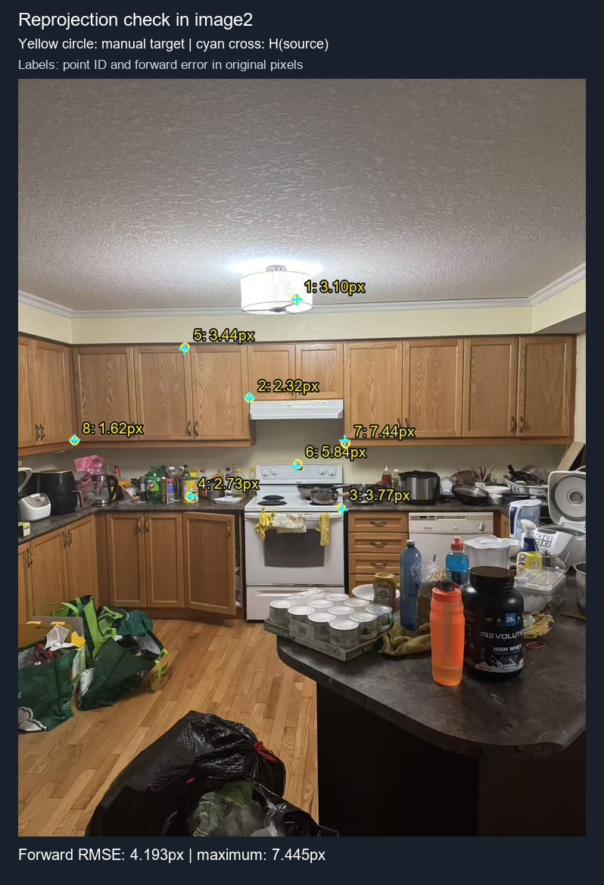
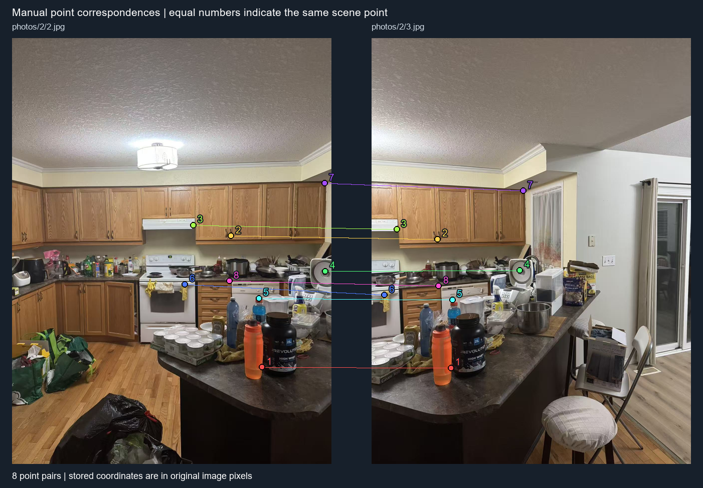
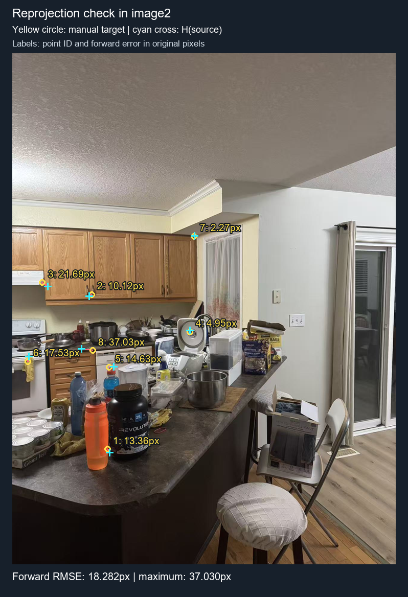

Manual correspondences are used to estimate a projective transformation between each adjacent image pair. All supplied points are used; no points are automatically removed. Each H maps image1 to image2.
Images are loaded with EXIF orientation applied, matching the annotation tool. Coordinates refer to the original image resolution; x increases rightward, y downward, and (0,0) is the center of the first pixel. Display resizing is used only for visualization.
[u, v, 1]^T ~ H [x, y, 1]^T
[ h11 h12 h13 ]
H = [ h21 h22 h23 ], h33 = 1
[ h31 h32 1 ]
u = (h11*x + h12*y + h13) / (h31*x + h32*y + 1)
v = (h21*x + h22*y + h23) / (h31*x + h32*y + 1)
For each correspondence (x,y) -> (u,v):
[ x y 1 0 0 0 -u*x -u*y ] h = u
[ 0 0 0 x y 1 -v*x -v*y ] h = v
h = [h11, h12, h13, h21, h22, h23, h31, h32]^T
A has shape (2n,8), b = [u1,v1,u2,v2,...]^T
h* = argmin_h ||A h - b||_2^2
s_j = ||A[:,j]||_2; replace a zero scale with 1
z = numpy.linalg.lstsq(A / s, b, rcond=None)[0]
h = z / s
Every pair contains more than four correspondences, so the system is overdetermined. Column scaling improves numerical conditioning without changing the original-pixel algebraic least-squares objective. The solver uses NumPy linear algebra, rather than a homography library. This linear fit minimizes algebraic residuals; it does not directly minimize geometric reprojection distances.
Validation measures forward errors in original target-image pixels:
e_i = ||project(H, p_i) - q_i||_2,
RMSE = sqrt(mean(e_i^2)). These are errors on the same points used to fit H, not held-out accuracy.
| Pair | Points | System | Rank | Mean (px) | RMSE (px) | Maximum (px) |
|---|---|---|---|---|---|---|
| set_1_1_to_2 | 8 | 16 × 8 | 8 | 10.466 | 12.368 | 20.602 |
| set_1_2_to_3 | 8 | 16 × 8 | 8 | 6.849 | 7.284 | 10.318 |
| set_1_3_to_4 | 9 | 18 × 8 | 8 | 7.333 | 8.042 | 13.600 |
| set_2_1_to_2 | 8 | 16 × 8 | 8 | 3.783 | 4.193 | 7.445 |
| set_2_2_to_3 | 8 | 16 × 8 | 8 | 15.199 | 18.282 | 37.030 |
Larger residuals can arise from inaccurate clicks, parallax from camera translation, or lens distortion. The residuals alone cannot identify the cause. Inspect the labeled points before proceeding to A.3; do not interpret a full-rank system as proof of accurate alignment.
photos/1/1.jpg → photos/1/2.jpg

[ 1.349652912 -0.09139260185 -543.5512466 ] [ 0.3204902821 1.182029319 -218.6698647 ] [ 0.0003640039329 -6.981694725e-05 1 ]
Full-precision outputs: H and diagnostics (JSON) · H (NumPy) · H (CSV)
Rank: 8/8. Condition number: raw A = 5.041e+07; column-scaled A = 158.4.
Each row below is [A | b]: [ 826.974 930.292 1 0 0 0 -338454.822 -380739.6765 409.269 ] [ 0 0 0 826.974 930.292 1 -777487.0489 -874622.3964 940.159 ] [ 978.269 917.136 1 0 0 0 -525858.7183 -492997.2854 537.54 ] [ 0 0 0 978.269 917.136 1 -897205.7176 -841138.4425 917.136 ] [ 1024.315 1084.876 1 0 0 0 -580932.0577 -615278.7444 567.142 ] [ 0 0 0 1024.315 1084.876 1 -1094409.9 -1159115.15 1068.431 ] [ 751.327 877.668 1 0 0 0 -255600.6941 -298581.7759 340.199 ] [ 0 0 0 751.327 877.668 1 -649531.2074 -758754.518 864.512 ] [ 1007.87 486.275 1 0 0 0 -578235.1764 -278985.693 573.72 ] [ 0 0 0 1007.87 486.275 1 -509991.2908 -246059.5265 506.009 ] [ 567.142 690.194 1 0 0 0 -69828.79161 -84979.44606 123.124 ] [ 0 0 0 567.142 690.194 1 -382111.3554 -465017.5173 673.749 ] [ 810.529 1384.176 1 0 0 0 -278406.9852 -475447.8459 343.488 ] [ 0 0 0 810.529 1384.176 1 -1132578.109 -1934153.418 1397.332 ] [ 1244.679 861.223 1 0 0 0 -943348.4375 -652725.2178 757.905 ] [ 0 0 0 1244.679 861.223 1 -1071946.182 -741705.0557 861.223 ]
The CSV preserves the numeric coefficients: [A | b] (CSV) · A, b, h and column scales (NumPy).
| Point | x | y | u marked | v marked | u projected | v projected | Error (px) |
|---|---|---|---|---|---|---|---|
| 1 | 826.974 | 930.292 | 409.269 | 940.159 | 394.439 | 927.130 | 19.740 |
| 2 | 978.269 | 917.136 | 537.540 | 917.136 | 536.315 | 912.446 | 4.847 |
| 3 | 1024.315 | 1084.876 | 567.142 | 1068.431 | 570.320 | 1073.129 | 5.672 |
| 4 | 751.327 | 877.668 | 340.199 | 864.512 | 321.947 | 874.067 | 20.602 |
| 5 | 1007.870 | 486.275 | 573.720 | 506.009 | 579.391 | 509.509 | 6.664 |
| 6 | 567.142 | 690.194 | 123.124 | 673.749 | 137.116 | 672.497 | 14.048 |
| 7 | 810.529 | 1384.176 | 343.488 | 1397.332 | 353.704 | 1399.564 | 10.457 |
| 8 | 1244.679 | 861.223 | 757.905 | 861.223 | 759.275 | 860.215 | 1.700 |
Forward RMSE: 12.368 px. Largest error: point 4, 20.602 px. Download point errors.

photos/1/2.jpg → photos/1/3.jpg

[ 1.722219528 0.04457771508 -914.0772292 ] [ 0.3551440725 1.552842704 -311.4954142 ] [ 0.0004788338246 0.0001092991172 1 ]
Full-precision outputs: H and diagnostics (JSON) · H (NumPy) · H (CSV)
Rank: 8/8. Condition number: raw A = 4.536e+07; column-scaled A = 144.7.
Each row below is [A | b]: [ 945.379 959.893 1 0 0 0 -461538.7547 -468624.5621 488.205 ] [ 0 0 0 945.379 959.893 1 -916790.739 -930865.8357 969.76 ] [ 672.39 1061.853 1 0 0 0 -138075.2865 -218051.5136 205.35 ] [ 0 0 0 672.39 1061.853 1 -742728.7179 -1172933.442 1104.61 ] [ 1228.234 831.621 1 0 0 0 -894526.5069 -605672.0692 728.303 ] [ 0 0 0 1228.234 831.621 1 -1041623.495 -705269.495 848.066 ] [ 540.829 910.558 1 0 0 0 -22119.36527 -37240.91164 40.899 ] [ 0 0 0 540.829 910.558 1 -512022.825 -862058.9492 946.737 ] [ 1063.783 473.118 1 0 0 0 -648800.1879 -288554.1951 609.899 ] [ 0 0 0 1063.783 473.118 1 -541782.5543 -240958.0512 509.298 ] [ 909.199 269.199 1 0 0 0 -405000.8762 -119914.1562 445.448 ] [ 0 0 0 909.199 269.199 1 -268679.2149 -79551.53489 295.512 ] [ 1247.968 404.049 1 0 0 0 -958154.8873 -310217.5088 767.772 ] [ 0 0 0 1247.968 404.049 1 -578122.424 -187176.1033 463.251 ] [ 1241.39 1022.384 1 0 0 0 -924523.9611 -761419.4616 744.749 ] [ 0 0 0 1241.39 1022.384 1 -1244679.684 -1025093.318 1002.65 ]
The CSV preserves the numeric coefficients: [A | b] (CSV) · A, b, h and column scales (NumPy).
| Point | x | y | u marked | v marked | u projected | v projected | Error (px) |
|---|---|---|---|---|---|---|---|
| 1 | 945.379 | 959.893 | 488.205 | 969.760 | 485.918 | 972.533 | 3.595 |
| 2 | 672.390 | 1061.853 | 205.350 | 1104.610 | 202.543 | 1096.082 | 8.978 |
| 3 | 1228.234 | 831.621 | 728.303 | 848.066 | 737.506 | 843.400 | 10.318 |
| 4 | 540.829 | 910.558 | 40.899 | 946.737 | 42.650 | 952.918 | 6.424 |
| 5 | 1063.783 | 473.118 | 609.899 | 509.298 | 601.556 | 513.090 | 9.164 |
| 6 | 909.199 | 269.199 | 445.448 | 295.512 | 453.149 | 293.167 | 8.050 |
| 7 | 1247.968 | 404.049 | 767.772 | 463.251 | 763.346 | 462.401 | 4.507 |
| 8 | 1241.390 | 1022.384 | 744.749 | 1002.650 | 744.034 | 1006.338 | 3.756 |
Forward RMSE: 7.284 px. Largest error: point 3, 10.318 px. Download point errors.

photos/1/3.jpg → photos/1/4.jpg

[ 1.68566096 -0.04215258004 -1551.436581 ] [ 0.5516907493 1.559060301 -532.7346435 ] [ 0.0005606039274 -2.388475365e-05 1 ]
Full-precision outputs: H and diagnostics (JSON) · H (NumPy) · H (CSV)
Rank: 8/8. Condition number: raw A = 1.091e+08; column-scaled A = 412.8.
Each row below is [A | b]: [ 1060.494 834.91 1 0 0 0 -130572.2633 -102797.4588 123.124 ] [ 0 0 0 1060.494 834.91 1 -913321.8242 -719043.6949 861.223 ] [ 1011.159 966.471 1 0 0 0 -64635.3056 -61778.75926 63.922 ] [ 0 0 0 1011.159 966.471 1 -1010512.869 -965853.425 999.361 ] [ 1228.234 371.159 1 0 0 0 -365328.3774 -110398.2753 297.442 ] [ 0 0 0 1228.234 371.159 1 -532623.6741 -160953.1003 433.65 ] [ 991.425 252.754 1 0 0 0 -63373.86885 -16156.54119 63.922 ] [ 0 0 0 991.425 252.754 1 -260369.0249 -66378.50823 262.621 ] [ 1188.766 644.147 1 0 0 0 -302760.8687 -164054.5787 254.685 ] [ 0 0 0 1188.766 644.147 1 -816569.3092 -442467.795 686.905 ] [ 1007.87 709.928 1 0 0 0 -84314.37272 -59389.73677 83.656 ] [ 0 0 0 1007.87 709.928 1 -738719.3244 -520342.4375 732.951 ] [ 945.379 325.113 1 0 0 0 -23118.29807 -7950.313302 24.454 ] [ 0 0 0 945.379 325.113 1 -301136.2998 -103559.8695 318.535 ] [ 1053.916 364.581 1 0 0 0 -143627.6725 -49685.09868 136.28 ] [ 0 0 0 1053.916 364.581 1 -411968.387 -142512.1608 390.893 ] [ 1182.188 996.072 1 0 0 0 -297197.3344 -250408.5165 251.396 ] [ 0 0 0 1182.188 996.072 1 -1193097.231 -1005263.752 1009.228 ]
The CSV preserves the numeric coefficients: [A | b] (CSV) · A, b, h and column scales (NumPy).
| Point | x | y | u marked | v marked | u projected | v projected | Error (px) |
|---|---|---|---|---|---|---|---|
| 1 | 1060.494 | 834.910 | 123.124 | 861.223 | 127.655 | 859.918 | 4.716 |
| 2 | 1011.159 | 966.471 | 63.922 | 999.361 | 72.741 | 992.307 | 11.293 |
| 3 | 1228.234 | 371.159 | 297.442 | 433.650 | 299.642 | 430.753 | 3.638 |
| 4 | 991.425 | 252.754 | 63.922 | 262.621 | 70.408 | 263.450 | 6.539 |
| 5 | 1188.766 | 644.147 | 254.685 | 686.905 | 257.575 | 682.818 | 5.006 |
| 6 | 1007.870 | 709.928 | 83.656 | 732.951 | 75.944 | 730.023 | 8.250 |
| 7 | 945.379 | 325.113 | 24.454 | 318.535 | 18.688 | 325.639 | 9.149 |
| 8 | 1053.916 | 364.581 | 136.280 | 390.893 | 132.569 | 390.049 | 3.806 |
| 9 | 1182.188 | 996.072 | 251.396 | 1009.228 | 243.659 | 1020.413 | 13.600 |
Forward RMSE: 8.042 px. Largest error: point 9, 13.600 px. Download point errors.

photos/2/1.jpg → photos/2/2.jpg
[ 1.301489927 0.02017097306 -450.7249237 ] [ 0.21932816 1.141860558 -128.4548219 ] [ 0.0002741537904 -4.864323875e-05 1 ]
Full-precision outputs: H and diagnostics (JSON) · H (NumPy) · H (CSV)
Rank: 8/8. Condition number: raw A = 5.566e+07; column-scaled A = 201.
Each row below is [A | b]: [ 935.512 469.829 1 0 0 0 -585952.3281 -294274.5752 626.344 ] [ 0 0 0 935.512 469.829 1 -464146.7947 -233101.8997 496.142 ] [ 810.529 703.35 1 0 0 0 -422362.6093 -366512.1683 521.095 ] [ 0 0 0 810.529 703.35 1 -583414.7216 -506267.8133 719.795 ] [ 1024.315 963.182 1 0 0 0 -746011.6874 -701488.3401 728.303 ] [ 0 0 0 1024.315 963.182 1 -989970.7424 -930887.4707 966.471 ] [ 672.39 920.425 1 0 0 0 -259707.9479 -355510.4745 386.246 ] [ 0 0 0 672.39 920.425 1 -632153.51 -865345.8476 940.159 ] [ 669.101 598.101 1 0 0 0 -251835.5653 -225112.6563 376.379 ] [ 0 0 0 669.101 598.101 1 -404591.3236 -361659.1146 604.679 ] [ 915.777 861.223 1 0 0 0 -576603.4198 -542254.4212 629.633 ] [ 0 0 0 915.777 861.223 1 -794712.1964 -747370.1806 867.801 ] [ 1037.471 802.02 1 0 0 0 -765831.0055 -592027.9054 738.171 ] [ 0 0 0 1037.471 802.02 1 -852545.9441 -659063.1431 821.754 ] [ 438.87 798.731 1 0 0 0 -55478.87331 -100969.9819 126.413 ] [ 0 0 0 438.87 798.731 1 -357756.2911 -651106.3417 815.176 ]
The CSV preserves the numeric coefficients: [A | b] (CSV) · A, b, h and column scales (NumPy).
| Point | x | y | u marked | v marked | u projected | v projected | Error (px) |
|---|---|---|---|---|---|---|---|
| 1 | 935.512 | 469.829 | 626.344 | 496.142 | 629.295 | 497.080 | 3.097 |
| 2 | 810.529 | 703.350 | 521.095 | 719.795 | 520.505 | 717.548 | 2.323 |
| 3 | 1024.315 | 963.182 | 728.303 | 966.471 | 730.845 | 969.252 | 3.768 |
| 4 | 672.390 | 920.425 | 386.246 | 940.159 | 388.700 | 938.968 | 2.728 |
| 5 | 669.101 | 598.101 | 376.379 | 604.679 | 374.384 | 607.485 | 3.443 |
| 6 | 915.777 | 861.223 | 629.633 | 867.801 | 627.307 | 873.158 | 5.840 |
| 7 | 1037.471 | 802.020 | 738.171 | 821.754 | 735.266 | 814.899 | 7.445 |
| 8 | 438.870 | 798.731 | 126.413 | 815.176 | 126.283 | 813.564 | 1.617 |
Forward RMSE: 4.193 px. Largest error: point 7, 7.445 px. Download point errors.

photos/2/2.jpg → photos/2/3.jpg

[ 0.9399842348 -0.1362081275 -465.9029199 ] [ 0.03083875908 0.8016378168 127.7786129 ] [ 9.356481141e-05 -0.0001378975604 1 ]
Full-precision outputs: H and diagnostics (JSON) · H (NumPy) · H (CSV)
Rank: 8/8. Condition number: raw A = 6.432e+07; column-scaled A = 193.1.
Each row below is [A | b]: [ 1001.292 1318.396 1 0 0 0 -317585.7914 -418163.5697 317.176 ] [ 0 0 0 1001.292 1318.396 1 -1323392.617 -1742504.217 1321.685 ] [ 876.309 792.153 1 0 0 0 -231829.2986 -209565.6605 264.552 ] [ 0 0 0 876.309 792.153 1 -705699.5245 -637927.9403 805.309 ] [ 725.014 749.396 1 0 0 0 -72574.62641 -75015.289 100.101 ] [ 0 0 0 725.014 749.396 1 -555245.4468 -573918.182 765.841 ] [ 1254.546 933.581 1 0 0 0 -744515.3419 -554037.3788 593.454 ] [ 0 0 0 1254.546 933.581 1 -1167094.107 -868502.9357 930.292 ] [ 988.136 1042.118 1 0 0 0 -319912.9825 -337389.871 323.754 ] [ 0 0 0 988.136 1042.118 1 -1036255.259 -1092866.02 1048.697 ] [ 692.124 986.205 1 0 0 0 -35136.36698 -50065.68303 50.766 ] [ 0 0 0 692.124 986.205 1 -712169.2953 -1014767.469 1028.962 ] [ 1251.257 581.656 1 0 0 0 -759025.0088 -352838.3462 606.61 ] [ 0 0 0 1251.257 581.656 1 -764839.6 -355541.3016 611.257 ] [ 869.731 973.049 1 0 0 0 -232949.6208 -260622.4172 267.841 ] [ 0 0 0 869.731 973.049 1 -863454.1514 -966026.5054 992.783 ]
The CSV preserves the numeric coefficients: [A | b] (CSV) · A, b, h and column scales (NumPy).
| Point | x | y | u marked | v marked | u projected | v projected | Error (px) |
|---|---|---|---|---|---|---|---|
| 1 | 1001.292 | 1318.396 | 317.176 | 1321.685 | 324.296 | 1332.994 | 13.364 |
| 2 | 876.309 | 792.153 | 264.552 | 805.309 | 256.916 | 811.944 | 10.116 |
| 3 | 725.014 | 749.396 | 100.101 | 765.841 | 117.704 | 778.522 | 21.695 |
| 4 | 1254.546 | 933.581 | 593.454 | 930.292 | 592.923 | 925.371 | 4.950 |
| 5 | 988.136 | 1042.118 | 323.754 | 1048.697 | 338.324 | 1047.329 | 14.634 |
| 6 | 692.124 | 986.205 | 50.766 | 1028.962 | 54.216 | 1011.778 | 17.527 |
| 7 | 1251.257 | 581.656 | 606.610 | 611.257 | 608.597 | 610.150 | 2.274 |
| 8 | 869.731 | 973.049 | 267.841 | 992.783 | 231.307 | 986.737 | 37.030 |
Forward RMSE: 18.282 px. Largest error: point 8, 37.030 px. Download point errors.

python a2_recover_homographies.py python -m unittest discover -s tests -v from homography import computeH H = computeH(im1_pts, im2_pts)
For A.3, use H to map image1 into image2 coordinates. Inverse warping will use its inverse to sample image1. The current deliverables cover A.2 only; image warping and panorama blending are subsequent steps.